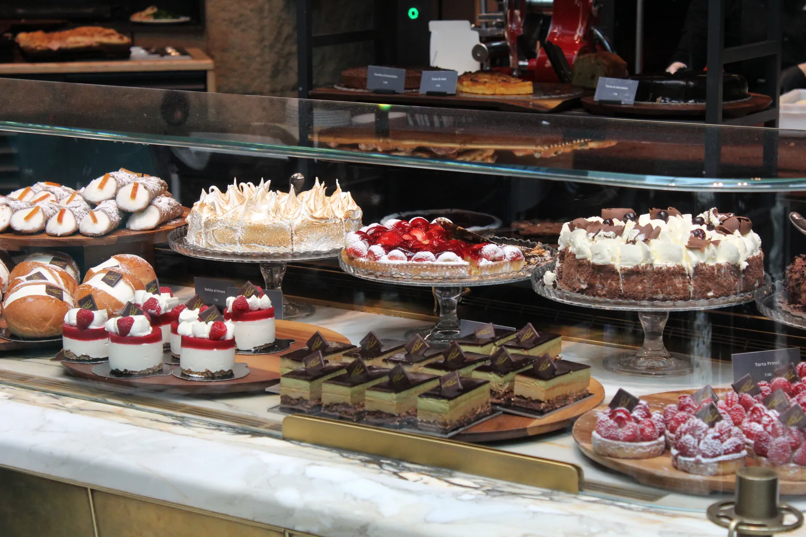

Pastane · Atatürk Caddesi & Yenişafak
Fotoğraf temsilîdir
Fabrikasyon değil, size özel.
Nişan, söz, doğum günü ya da canınız çektiğinde. Pastanızı birkaç seçimle tarif edin, sipariş notu tek mesajda bize gelsin.
Vitrinimiz
Pastadan lokmaya, tek sayfada.
Başlıklar Instagram'daki öne çıkanlarınızdan alındı. Yayında her başlığın altında ürünleriniz ve fotoğraflarınız durur.
- Yaş pastaKişiye özel figür ve renk
- OrganizasyonNişan, söz, doğum günü
- BaklavaTepsi ve kutu
- LokmaHayır ve davetler için
- DondurmaKülah ve kutu
- CupcakeKutlama kutuları
- KurabiyeÇay saati ve ikram

Özel pasta siparişi
DM'de on mesaj yerine tek not.
Müşteri gün, kişi sayısı, lezzet ve şubeyi baştan seçer; siz tek mesajda her şeyi görürsünüz.
- Müşteri pastasını seçeneklerle tarif eder.
- Hazır not WhatsApp'ınıza gelir.
- Siz fiyatı ve teslim saatini yazarsınız.
Şubeler